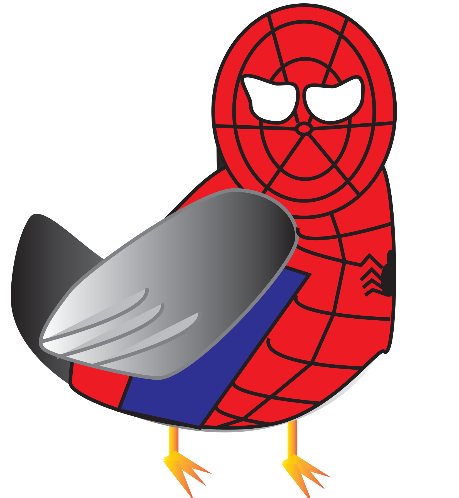
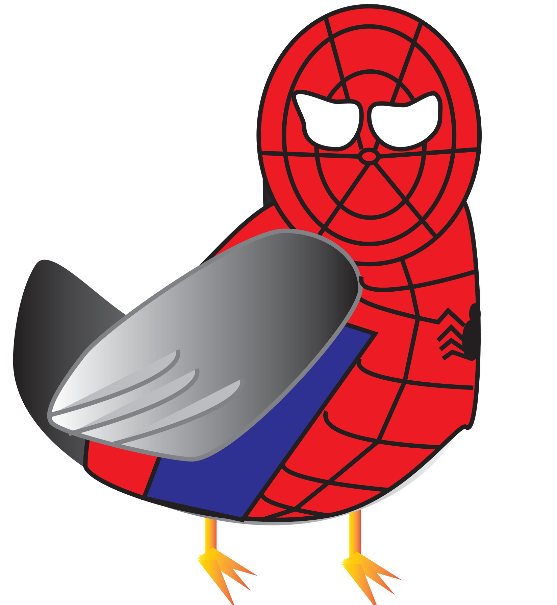

TIn this Autobiographical Game, I wanted to reflect on life in the city. How when you live in the city and need to just collect. Adults need to get money, students need to collect grades. I wanted to make two different plays in which adults and students are represented by pigeons, since pigeons are representatives of the city. The pigeon is batman pigeon for adults and spiderman for students and it was to be batman collect money, because adults need money and spiderman collect grades. Since the life of an adult is harder than what people say, so I made the adult scene harder with enemies. I borrowed the code from the examples to make my game, then changed up the bodies and scenes to make my game work. I was able to figure out what each code in the example does, so I could change it into my own style for the game. I made it to collect 50 items in under 20 seconds, so that players can see what happens when you don’t do it and what happens if you accomplish it will tell you that you are good. There’s buttons for players to choose for adults or students and there’s a menu button to bring players back to the starting page.
 
